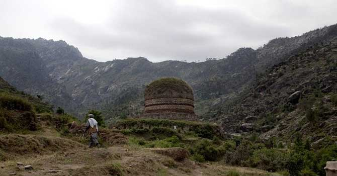
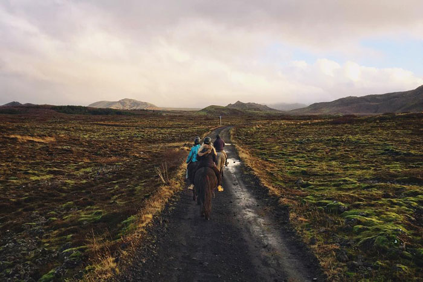
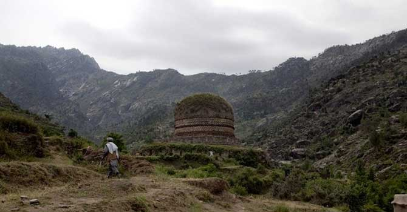
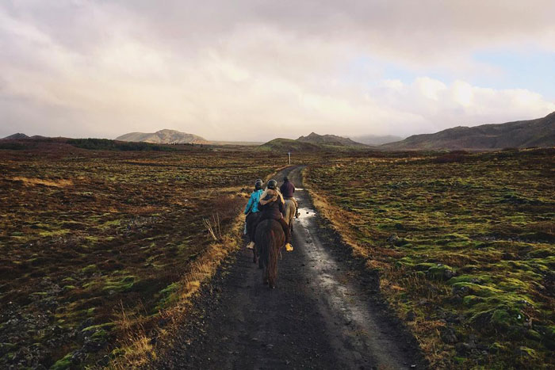

The Adventure BeginsReykjavík
We caught glimpses of faces at most of the windows peering curiously at us and watching our progress through the town.
Much to our surprise, when about two miles outside Reykjavik, we met our fellow-passenger by the Ceres, him with whom we had lunched at Thorshavn on the outward journey.
A Helping HandReykjanesta
We were six in all—a semi-scientific party. There was Miss J. A. Hastie, a woman who has travelled much in Europe, Asia, Africa, and America, and who is not unacquainted with our Colonies at the Antipodes, or with the islands of the South Seas. She was specially interested in the botany of the country, in its folklore, and in the people.
New AdventuresKrísuvíkurbjarg
Ashore one is first struck with the Faroese themselves: they are a fine race, and retain their native politeness and independence of character; they are courteous in the extreme to strangers.
 



Broad, wholesome, charitable views of men and things cannot be acquired by vegetating in one little corner of the earth all of one’s lifetime. — Mark Twain
Sheer Faces of RockHveragerði
On the west side, and near to the north end of the fjord, there are some very fine specimens of common basaltic land forms—two grand corries, a fine dyke, some sheer faces of rock, and as we passed by the end of the land an almost sheer precipice which faced west came into view, while standing out at its foot there was a solitary basaltic column.
Above the CloudsGullfoss
Gullfoss is one of the sights of Iceland. It is a magnificent waterfall on the Hvitá, where the white water of the river cascades over a series of step-like barriers stretching from side to side, and then plunges finally over a ledge of very hard rock into a yawning abyss more than a hundred feet deep, whence it throws up clouds of spray that are carried hither and thither as the wind sweeps first this way and then that; so thick is the spray, that one's clothing soon becomes saturated on incautiously getting into it.

The Final DestinationEyjafjallajökull
Miss Hastie might have had an awkward experience at the spring where she elected to perform her ablutions, of whose periodical activity she was at the time unaware.
The strip is about fourteen miles wide at its narrowest part (not eight as shown on the existing maps), and extends north and south about twenty-five miles. Strytur is on the divide, or water-parting, between one system of rivers flowing north and another flowing south, and it stands on the highest part of this strip of land.
Take only memories, leave only footprints. — Chief Seattle